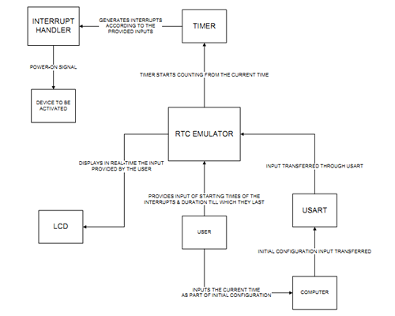

Electronics freak, hardware tinkerer, movie buff, android lover and blogger
We made a Real Time Clock in software which is used for doing a task based on the time of the day. RTC chips are available in market and are used in almost every application which needs a real time clock.They precisely calculate the time.
We implemented it using Atmega32 controller. We used timer1 at 8MHz frequency and used switches for time input and LCD for output. In our code, we first ask the user to enter the the time at which the system should start, for how much time to be on, after getting over - after what interval should be restart and how many times per day it should run. The current time is fed to the microcontroller using USART, but switches can also be used.
Finally, the data is displayed on the LCD while the user is pressing the switches and manipulating it. The output is connected to motor, which runs when current time=desired time.
One thing to notice is that using 8MHz freq clock, so even though I am giving interrupt at every 1 sec, an error of approximately 50 seconds per day.
So, we have to add 50 secs to each day. Instead, you can use a external crystal for minimizing the error.
I was in charge of the coding the RTC and helped in hardware testing.
The image below shows the block diagram of the system.
